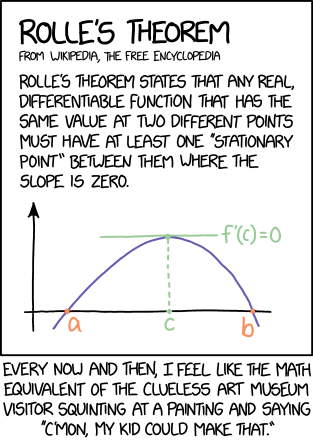

Chapter 28 Differentiation
28.1 Definition
Prototypical example for this section: has derivative .
I suspect most of you have seen this before, but:
Definition 28.1.1.
Let be an open subset111We will almost always use or , and you will not lose much by restricting the definition to those. of and let be a function. Let . We say is differentiable at if the limit222Remember we are following the convention in 26.6.7. So we mean “the limit of the function except the value at can be anything”. And this is important because that fraction does not have a definition at . As promised, we pay this no attention.
exists. If so, we denote its value by and refer to this as the derivative of at .
The function is differentiable if it is differentiable at every point. In that case, we regard the derivative as a function it its own right.
Exercise 28.1.2
Show that if is differentiable at then it is continuous at too.
Here is the picture. Suppose is differentiable (hence continuous). We draw a graph of in the usual way and consider values of . For any nonzero , what we get is the slope of the secant line joining to . However, as gets close to zero, that secant line begins to approach a line which is tangent to the graph of the curve. A picture with a parabola is shown below, with the tangent in red, and the secant in dashed green.
Ψimport graph;
Ψsize(8cm);
Ψreal f(real x) { return (x-2)*(x-2)/2 - 0.1; }
Ψgraph.xaxis("$x$");
Ψgraph.yaxis("$y$");
Ψdraw(graph(f,-1,5,operator ..), blue, Arrows);
Ψpair P = (3, f(3));
Ψdot("$(p, f(p))$", P, dir(-20), red);
Ψdraw((1.8,-0.8)--(4.2, 1.6), red);
Ψlabel("Slope $f’(p)$", (4.2, 1.6), dir(-25), red);
Ψpair Q = (4.3, f(4.3));
Ψdot("$(p+h, f(p+h))$", Q, dir(-20), deepgreen);
Ψdraw(P--Q, dashed+deepgreen);
Ψlabel("Slope $\frac{f(p+h)-f(p)}{h}$", P--Q, 1.5*dir(165), deepgreen);
So the picture in your head should be that
Moral 28.1.3 —
looks like the slope of the tangent line at .
Remark 28.1.4 —
Note that the derivatives are defined for functions on open intervals. This is important. If for example, we could still define the derivative at each interior point, but no longer makes sense since is not given a value on any open neighborhood of .
Let’s do one computation and get on with this.
Example 28.1.5 (Derivative of is )
Let by . For any point , and nonzero we can compute
Thus,
Thus the slope at each point of is given by the formula . It is customary to then write as the derivative of the entire function .
Abuse of Notation 28.1.6.
We will now be sloppy and write this as . This is shorthand for the significantly more verbose “the real-valued function on domain so-and-so has derivative at every point in its domain”.
In general, a real-valued differentiable function naturally gives rise to derivative at every point , so it is customary to just give up on altogether and treat as function itself , even though this real number is of a “different interpretation”: is meant to interpret a slope (e.g. your hourly pay rate) as opposed to a value (e.g. your total dollar worth at time ). If is a function from real life, the units do not even match!
This convention is so deeply entrenched I cannot uproot it without more confusion than it is worth. But if you read the chapters on multivariable calculus you will see how it comes back to bite us, when I need to re-define the derivative to be a linear map, rather than a single real number.
28.2 How to compute them
Same old, right? Sum rule, all that jazz.
Theorem 28.2.1 (Your friendly high school calculus rules)
In what follows and are differentiable functions, and , are open subsets of .
-
•
(Sum rule) If then then .
-
•
(Product rule) If then then .
-
•
(Chain rule) If and then the derivative of the composed function is .
Proof.
-
•
Sum rule: trivial, do it yourself if you care.
-
•
Product rule: for every nonzero and point we may write
which as gives the desired expression.
-
•
Chain rule: this is where 26.6.7 will actually bite us. Let , , so that
We would like to write the expression in the limit as
The problem is that the denominator might be zero. So instead, we define the expression
which is continuous since was differentiable at . Then, we do have the equality
because if with , then both sides are equal to zero anyways.
Then, in the limit as , we have , while by continuity. This was the desired result. ∎
Exercise 28.2.2
Compute the derivative of the polynomial , viewed as a function .
Remark 28.2.3 —
Quick linguistic point: the theorems above all hold at each individual point. For example the sum rule really should say that if are differentiable at the point then so is and the derivative equals . Thus if and are differentiable on all of , then it of course follows that . So each of the above rules has a “point-by-point” form which then implies the “whole ” form.
We only state the latter since that is what is used in practice. However, in the rare situations where you have a function differentiable only at certain points of rather than the whole interval , you can still use the below.
We next list some derivatives of well-known functions, but as we do not give rigorous definitions of these functions, we do not prove these here.
Proposition 28.2.4 (Derivatives of some well-known functions)
-
•
The exponential function defined by is its own derivative.
-
•
The trig functions and have , .
Example 28.2.5 (A typical high-school calculus question)
This means that you can mechanically compute the derivatives of any artificial function obtained by using the above, which makes it a great source of busy work in American high schools and universities. For example, if
then one can compute by:
| sum rule | ||||
| above table | ||||
| product rule | ||||
Of course, this function is totally artificial and has no meaning, which is why calculus is the topic of widespread scorn in the United States. That said, it is worth appreciating that calculations like this are possible: one could say we have a pseudo-theorem “derivatives can actually be computed in practice”.
If we take for granted that , then we can derive two more useful functions to add to our library of functions we can differentiate.
Corollary 28.2.6 (Derivative of is )
The function has derivative .
Proof.
We have that . Differentiate both sides, and again use the chain rule333There is actually a small subtlety here: we are taking for granted that is differentiable.
Thus . ∎
Corollary 28.2.7 (Power rule)
Let be a real number. The function by has derivative .
Proof.
We knew this for integers already, but now we can prove it for any positive real number . Write
considered as a function . The chain rule (together with the fact that ) now gives
The reason we don’t prove the formulas for and is that we don’t at the moment even have a rigorous definition for either, or even for if is not rational. However it’s nice to know that some things imply the other. ∎
28.3 Local (and global) maximums
Prototypical example for this section: Horizontal tangent lines to the parabola are typically good pictures.
You may remember from high school that one classical use of calculus was to extract the minimum or maximum values of functions. We will give a rigorous description of how to do this here.
Definition 28.3.1.
Let be a function. A local maximum is a point such that there exists an open neighborhood of (contained inside ) such that for every .
A local minimum is defined similarly.444Equivalently, it is a local maximum of .
Definition 28.3.2.
A point is a local extrema if it satisfies either of these.
The nice thing about derivatives is that they pick up all extrema.
Theorem 28.3.3 (Fermat’s theorem on stationary points)
Suppose is differentiable and is a local extrema. Then .
If you draw a picture, this result is not surprising.
Ψimport graph;
Ψsize(7cm);
Ψreal f(real x) { return 2-(x-2)*(x-2)/3; }
Ψgraph.xaxis("$x$");
Ψgraph.yaxis("$y$");
Ψdraw(graph(f,-1,5,operator ..), blue, Arrows);
Ψpair P = (2, f(2));
Ψdot("$(p, f(p))$", P, dir(90), red);
Ψdraw( (0.3,f(2))--(3.7,f(2)), red );
(Note also: the converse is not true. Say, has but is not a local extrema for .)
Proof.
Assume for contradiction . Choose any with . Then for sufficiently small we should have
In particular for while for . So is not a local extremum.
The proof for is similar. ∎
However, this is not actually adequate if we want a complete method for optimization. The issue is that we seek global extrema, which may not even exist: for example (which has ) obviously has no local extrema at all. The key to resolving this is to use compactness: we change the domain to be a compact set , for which we know that will achieve some global maximum. The set will naturally have some interior , and calculus will give us all the extrema within . Then we manually check all cases outside .
Let’s see two extended examples. The one is simple, and you probably already know about it, but I want to show you how to use compactness to argue thoroughly, and how the “boundary” points naturally show up.
Example 28.3.4 (Rectangle area optimization)
Suppose we consider rectangles with perimeter and want the rectangle with the smallest or largest area.
ΨΨsize(4cm);
ΨΨdraw( (0,0)--(7,0)--(7,3)--(0,3)--cycle );
ΨΨlabel("$10-x$", (3.5,0), dir(-90));
ΨΨlabel("$x$", (0,1.5), dir(180));
Ψ
If we choose the legs of the rectangle to be and , then we are trying to optimize the function
By compactness, there exists some global maximum and some global minimum.
As is differentiable on , we find that for any , a global maximum will be a local maximum too, and hence should satisfy
Also, the points and lie in the domain but not the interior . Therefore the global extrema (in addition to existing) must be among the three suspects .
We finally check , , . So the square has the largest area and the degenerate rectangles have the smallest (zero) area.
Here is a non-elementary example.
Proposition 28.3.5 ()
For all real numbers we have .
Proof.
Define the differentiable function
Consider the compact interval . If then obviously . Similarly if then obviously too. So we just want to prove that if , we have .
Indeed, there exists some global minimum . It could be the endpoints or . Otherwise, if it lies in then it would have to satisfy
As , , , we conclude is the global minimum of ; and hence for all , hence for all . ∎
Remark 28.3.6 —
If you are willing to use limits at , you can rewrite proofs like the above in such a way that you don’t have to explicitly come up with endpoints like or . We won’t do so here, but it’s nice food for thought.
28.4 Rolle and friends
Prototypical example for this section: The racetrack principle, perhaps?
One corollary of the work in the previous section is Rolle’s theorem.
Theorem 28.4.1 (Rolle’s theorem)
Suppose is a continuous function, which is differentiable on the open interval , such that . Then there is a point such that .
Proof.
Assume is nonconstant (otherwise any works). By compactness, there exists both a global maximum and minimum. As , either the global maximum or the global minimum must lie inside the open interval , and then Fermat’s theorem on stationary points finishes. ∎
I was going to draw a picture until I realized xkcd #2042 has one already.
Image from [img:xkcd_rolles]
One can adapt the theorem as follows.
Theorem 28.4.2 (Mean value theorem)
Suppose is a continuous function, which is differentiable on the open interval . Then there is a point such that
Pictorially, there is a such that the tangent at has the same slope as the secant joining , to ; and Rolle’s theorem is the special case where that secant is horizontal.
Ψimport graph;
Ψsize(7cm);
Ψreal f(real x) { return x*x/2 - 0.2; }
Ψgraph.xaxis("$x$");
Ψgraph.yaxis("$y$");
Ψdraw(graph(f,-2,2.5,operator ..), blue, Arrows);
Ψpair A = (-1, f(-1));
Ψpair B = (2, f(2));
Ψdot("$(a, f(a))$", A, dir(A-B), deepgreen);
Ψdot("$(b, f(b))$", B, dir(10), deepgreen);
Ψdraw(A--B, deepgreen);
Ψlabel("Slope $\frac{f(b)-f(a)}{b-a}$", A--B, dir(120), deepgreen);
Ψdraw(A--(A.x,0), deepgreen+dashed);
Ψdraw(B--(B.x,0), deepgreen+dashed);
Ψlabel("$a$", (A.x,0), dir(-90), deepgreen);
Ψlabel("$b$", (B.x,0), dir(-90), deepgreen);
Ψreal c = (A.y-B.y) / (A.x-B.x);
Ψpair C = (c, f(c));
Ψdot("$(c, f(c))$", C, dir(-70), red);
Ψdraw( (c-1, f(c)-c)--(c+1, f(c)+c), red );
Proof of mean value theorem.
Let be the slope of the secant line, and define
which intuitively shears downwards so that the secant becomes horizontal. In fact now, so we apply Rolle’s theorem to . ∎
Remark 28.4.3 (For people with driver’s licenses) —
There is a nice real-life interpretation of this I should mention. A car is travelling along a one-dimensional road (with denoting the position at time ). Suppose you cover kilometers in your car over the course of hours (say , ). Then there is some point at time in which your speed at that moment was exactly kilometers per hour, and so you cannot really complain when the cops pull you over for speeding.
The mean value theorem is important because it lets you relate use derivative information to get information about the function in a way that is really not possible without it. Here is one quick application to illustrate my point:
Proposition 28.4.4 (Racetrack principle)
Let be two differentiable functions with .
-
(a)
If for every , then for every .
-
(b)
If for every , then for every .
This proposition might seem obvious. You can think of it as a race track for a reason: if and denote the positions of two cars (or horses etc) and the first car is always faster than the second car, then the first car should end up ahead of the second car. At a special case , this says that if , i.e. “ is increasing”, then, well, for , which had better be true. However, if you try to prove this by definition from derivatives, you will find that it is not easy! However, it’s almost a prototype for the mean value theorem.
Proof of racetrack principle.
We prove (a). Let , so . Assume for contradiction for some . Then the secant joining to has negative slope; in other words by mean value theorem there is a such that
so , contradiction. Part (b) is the same. ∎
Sometimes you will be faced with two functions which you cannot easily decouple; the following form may be more useful in that case.
Theorem 28.4.5 (Ratio mean value theorem)
Let be two continuous functions which are differentiable on , and such that . Then there exists such that
Proof.
Use Rolle’s theorem on the function
This is also called Cauchy’s mean value theorem or the extended mean value theorem.
28.5 Smooth functions
Prototypical example for this section: All the functions you’re used to.
Let be differentiable, thus giving us a function . If our initial function was nice enough, then we can take the derivative again, giving a function , and so on. In general, after taking the derivative times, we denote the resulting function by . By convention, .
Definition 28.5.1.
A function is smooth if it is infinitely differentiable; that is the function exists for all .
Question 28.5.2
Show that the absolute value function is not smooth.
Most of the functions we encounter, such as polynomials, , , , are smooth, and so are their compositions. Here is a weird example which we’ll grow more next time.
Example 28.5.3 (A smooth function with all derivatives zero)
Consider the function
This function can be shown to be smooth, with . So this function has every derivative at the origin equal to zero, despite being nonconstant!
28.6 A few harder problems to think about
Problem 28A (Quotient rule).
Let and be differentiable functions. Let be their quotient (also a function ). Show that the derivative of is given by
Problem 28B.
For real numbers , how small can be?
Problem 28C (RMM 2018).
††margin:Determine whether or not there exist nonconstant polynomials and with real coefficients satisfying
Problem 28D.
††margin:Let be a degree polynomial with real coefficients. Prove that the equation has at most real solutions in .
Problem 28E (Jensen’s inequality).
Let be a twice differentiable function such that for all (i.e. is convex). Prove that
for all real numbers and in the interval .
Problem 28F (L’Hôpital rule, or at least one case).
Let be differentiable functions and let be a real number. Suppose that
Prove that
provided the right-hand limit exists.
Problem 28G.
Calculate the derivative of the function defined by . First rewrite it as . Write and then apply the chain rule and product rule: